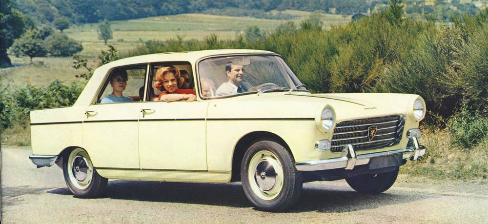

Te voila donc sur la page 404. Celle qui apparait quand un truc a merdé sur le site. Bon, on va pas se mentir : si tu est arrivé ici, c'est que tu l'as bien cherché : ce site est monopage. :-) Du coup, j'en profite pour te parler un peu. Genre 'entre nous'. Par exemple : la 404 que tu peux admirer ci-dessous.

Et bien figure toi que c'est la première voiture dont je me souviens. Mon père en avait une. Une blanche, une 'familiale' (C'est comme ça qu'on appelait les breaks dans les années 70. D'ailleurs même 'break' c'est ringard. Ils les appellent SationWagon ou Tourer maintenant. Soit.)
Du point de vue technique, c'est pas folichon. On peut juste noter que c'est Pininfarina qui l'a dessiné (ils auraient du prendre plus de drogue.) Pour le reste, c'est du super classique même pour l'époque : un essieu arrière rigide et quatre freins à tambour ! Oui, tu devines bien : on se faisait des cheveux blancs pour freiner la tonne de 404 lancée à vive allure.
Pendant ce temps la, Citroën sortait une DS avec syspension hydropneumatique, freins à disque, injection électronique, etc etc. Mais je t'en parlerai quand dans les standards HTML il y aura des pages DS.
Pendant que tu fais mumuse avec le responsive et le redimensionnment, je t'offre un petit intermède. Strokool.